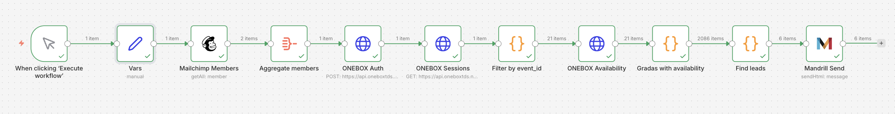

Recovering
lost demand.
A case study in turning a ticketing dead-end into a marketing channel — built with tools every team already has.
stack
nodes
regulations
compliant
The problem, the solution, and why it matters.
A fan wants to see RC Celta play. The section is sold out. Days later a seat frees up — but the ticket office has no record that this fan wanted it. That missing memory is silent revenue lost.
Invisible lost demand
A significant share of tickets that free up (refunds, failed payments, released pre-allocations) never reach the fans who wanted them. The sale evaporates because nobody told them.
Automated recovery
Capture interest while inventory is sold out, continuously watch availability in ONEBOX, and send a personalised email with a purchase deep-link the moment the requested section has seats again.
Key takeaway
Recovering lost demand is a timing game. The value isn't in owning the list — it's in reaching the customer the moment the problem that stopped them from buying has been solved.
Quick demo
A 2-minute visual walkthrough of the case.
Video not loading? Watch on YouTube →
Seven tools every marketer already knows.
Deliberately few moving parts. Every component is either serverless, free-tier-friendly, or a tool the marketing team already has on its shelf.
ONEBOX TDS
The platform the club uses to sell tickets online. Tells us — in real time — how many seats are still free in each section of each match.
Landing page
Public static page with the "notify me when tickets open" form. Designed with the Celta look & feel and hosted free on GitHub Pages.
Mailchimp
The CRM audience. Every registered fan lives here with merge fields (their data) and tags (by match and section) so the team can segment without writing SQL.
Mandrill
The service that sends the one-to-one alert emails. Optimised for latency and individual tracking. Same login as Mailchimp.
n8n
The visual glue: polls ONEBOX, cross-references Mailchimp, triggers Mandrill. Free cloud tier or self-hosted. Zero code for the marketer.
Google Analytics 4
The analytics layer: page views, custom events (generate_lead), UTM attribution, and a full funnel all the way to conversion.
Claude Code
Anthropic's agentic CLI — the tool this entire case study was built in. Describe what you want in natural language; it reads the codebase, writes the code, runs the commands, deploys the services, and iterates visually alongside you. Every line of this platform shipped through Claude Code.
Best practice
Pick tools the team already knows > pick the technically best ones. Each new tool is a learning curve, a contract, and a hidden cost.
How it all connects
Hover any tool to highlight its connections
From brief to presentation, week by week.
The case study mapped to the AI Marketing Lab's six-week calendar — what you do, what you ship, and where "done" lives at the end of each week.
Briefing & setup
Read the brief, surface doubts, install the stack and verify every tool opens cleanly.
API & landing
Understand the ONEBOX API. Design and integrate the branded landing page with a working form.
Mailchimp & n8n
Integrate Mailchimp. Design the n8n workflow that links availability to contacts.
MVP testing
End-to-end dry runs. Submit, trigger, deliver. Fix what breaks in the real flow.
Next-steps proposal
Draft a growth roadmap: what scales, what hardens, what monetises from here.
Presentation
Walk the room through the problem, the solution and the business case. Ship.
How to use this calendar
Treat each week as a checkpoint, not a deadline. If Week 2 slips, compress Week 4's MVP testing rather than sliding everything right — the Week 6 presentation is fixed. When you're stuck, the fastest way back on pace is to look one phase ahead and ask: what would unblock that?
Four credentials, none paid on the starter plan.
This is the minimum setup. Every key either has a generous free tier or is free-forever. Budget 30 minutes to have them all lined up before you start building.
What you need
client_secret- 32-character string that identifies your channel in ONEBOX.
channel_id- Integer that identifies the channel inside the organisation.
Stage credentials for this course
Pre-provisioned by ONEBOX for the AI Marketing Lab. Paste these into your local .env file when Claude Code asks for them — no need to request your own keys.
ONEBOX_CLIENT_SECRET=163242167d78a369efc5272b39958803
ONEBOX_CHANNEL_ID=2287Safe to share — stage only
These credentials point at ONEBOX's stage (pre-production) environment. They're intentionally public for course use. Any real money, real tickets, and real fans live behind a different pair of keys the club never hands out.
For production, rules change
A production client_secret grants access to the club's full catalog and live inventory. Never embed a production key in the frontend or commit it to a public repo. Keep it in your platform's secret manager.
What you need
- API key
- Token to call the Marketing API from n8n and the automation layer.
- Audience ID
- Identifier of the audience (list) where your contacts will live.
- Server prefix
- Suffix of the API key (e.g.
...-us1→us1). Tells you which datacenter your account lives on.
Where to find it
What you need
- API key
- Token to call the Transactional API from n8n.
- Verified sending domain
- A domain you control with DKIM + SPF records published and verified in Mandrill.
Where to find it
Watch out
Without a verified domain, Mandrill rejects every send with unsigned. It's the number-one error beginners hit. Publish the TXT records before you wire up the flow.
What you need
- Measurement ID
- The
G-XXXXXXXidentifier of the web data stream.
Where to find it
This one is safe to expose in public HTML — it's designed to be visible. GA4 distinguishes sessions via cookies and URL parameters, not by the ID itself.
The AI that built this platform.
Anthropic's agentic coding assistant. Lives in your terminal or IDE, reads your codebase, edits files, runs commands, and iterates with you in plain English. Every commit in this case study's repo came from a Claude Code session.
What is Claude Code
Describe, don't specify
Tell it what you want — "build a signup form styled like Celta's site and sync submissions to Mailchimp" — and it writes, edits, tests, and iterates until it works.
Reads, writes, runs
Not autocomplete. It explores the codebase with grep and read, edits multiple files at once, runs builds, tests the output, and deploys when ready.
Visual feedback loop
Paste a screenshot of a broken layout — it reads the image, finds the CSS bug, fixes it, asks you to refresh. Like pair programming with a colleague who never sleeps.
Why it matters here
This case study isn't only about AI marketing — it's a case built with AI. Every artefact you're reading — the landing page, the Mailchimp sync, the n8n workflow JSON, the legal copy, this manual itself — was produced through conversation with Claude Code. The commit history at github.com/.../commits/main is the paper trail of that conversation.
Key takeaway
For a marketing team, this changes the economics of launching technical experiments. What used to require a sprint with an engineer now takes an afternoon with an AI that already knows your stack.
Setup in Visual Studio Code · 5 minutes
Get an Anthropic account
Sign up at console.anthropic.com. Free tier works to try it; paid plan recommended for serious use.
Install the extension
In VS Code, open Extensions (Cmd ⇧ X / Ctrl ⇧ X), search "Claude Code", install the official Anthropic extension.
Sign in
Command Palette (Cmd ⇧ P) → run Claude Code: Sign In. A browser window handles OAuth with your Anthropic account.
Open a project + the panel
Open any folder. Click the Claude icon in the activity bar (left sidebar) to reveal the Claude Code panel. Start typing.
First prompt to try
"Build me a single HTML page that says «¡Hola, Celta!» in huge letters in the middle, with today's date right below. Make it look clean and colourful — surprise me with the styling. Save it as hola.html." — when it's done, open the file in your browser. From first prompt to first page in under a minute. That loop is the whole magic.
Tips for effective use
Name files + constraints
"Update generate-landing.js so the form submits to a new URL at the top. Keep the existing styling." works better than "change where the form goes".
Screenshot, don't describe
When a UI is off, paste a screenshot into the chat. Claude reads the image and edits the CSS. Explaining "the button is too far right" in words is slower than dragging in a PNG.
Let Claude commit for you
Ask it to commit after each working change. The history becomes a clean, reviewable log of decisions. Revert with a click if anything goes sideways.
Watch out
Claude Code can run shell commands and modify files autonomously. Keep your project in a dedicated empty folder the first few times — easy to delete and restart if anything gets weird. Never paste real production secrets into the chat without thinking twice.
The ticketing API.
ONEBOX TDS is the platform where RC Celta sells tickets online. It exposes a professional REST API that we use exclusively in read mode — we never modify data in ONEBOX.
Data model (with names a marketer understands)
Key takeaway
To the fan we speak match and section. The internal IDs (session_id, grada_id) are for the machines.
The three endpoints we use
The purchase deep-link
When we send the alert email, the Buy ticket button points at a URL that opens ONEBOX directly on the seat map, with every UTM GA4 needs to attribute the conversion:
viewCode=V_blockmap is functional — it opens the seat map directly. The four utm_* parameters let GA4 attribute any resulting purchase to the exact email that drove the click.
Try it yourself — build this in an afternoon
Five prompts, copied one after the other into Claude Code (see §05), take you from two API keys to a branded live-data landing page. No coding knowledge required — just copy, paste, run, and watch Claude build each piece while explaining what it's doing.
Before you start
You need three things:
① Your ONEBOX keys from the club (two values: client_secret and channel_id).
② VS Code with Claude Code installed (see §05).
③ A new empty folder, opened in VS Code.
Don't worry about Node.js, setup, or anything technical — Claude Code handles all of that for you as you go. Just paste the prompts below one at a time and follow along.
What you'll see: Claude creates a .env file for your keys, writes the script, and runs it. If everything works, the terminal prints something like ✔ token acquired · expires in 12 hours. If it fails, Claude reads the error message and helps you figure out what's wrong.
What you'll see: Something like 21 sessions returned · first: NUMERADO. This proves Claude can not just authenticate but also read real catalog data — the foundation for every webpage we'll build next.
What you'll see: Open the file in your browser — it looks like developer docs built from your own live data. Three neat sections with the real API request / response for each call. You can send this link to a teammate without leaking any secrets.
See the live resultWhat you'll see: Your entire catalog, rendered as a branded grid of cards. Instantly spot which matches are selling fast (red bars), which still have room (green), and filter to a specific venue with the search box.
See the live resultWhat's next
You can now talk to ONEBOX and visualise its data. Section 07 turns that data into the fan-facing «¡Avísame!» signup page with its own prompt-by-prompt tutorial — and then §08–§10 show how every submission becomes an automated email alert.
Static, branded, wired to ONEBOX.
A static HTML page that mirrors RC Celta's official landing look & feel. The match data (image, date, available sections) is baked in at build time by reading ONEBOX directly.
Static HTML · GitHub Pages
A page generated at build time from a Node.js template. Served directly from GitHub Pages with automatic HTTPS.
Fewer parts = more stable
No runtime server, no database in the hot path. Free to host. Trivial to cache on a CDN.
Form submission flow
User fills it in
Name, email, section, consents.
Browser captures UTMs
Source, campaign, locale, user-agent.
Sent to automation
Validation + upsert to Mailchimp.
Thank-you + GA4
generate_lead event fires.
Key takeaway
The browser never talks directly to Mailchimp. An intermediate automation validates the data, enforces business logic, and keeps API keys off the client.
Try it yourself — build the «¡Avísame!» page
With your ONEBOX credentials from §06 already in the .env file, two prompts take you from an empty folder to a live, branded signup form with the real stadium sections in the dropdown. We split it on purpose — first the look, then the data — so each step is easy to verify.
assets/celta-crest.svg), a big white «¡Avísame!» title, one short intro line in Spanish, and a form asking for: name, surname, email, a grada (stadium section) dropdown with three placeholder options for now ("Pista Alta", "Río Alto", "Marcador"), and a consent checkbox for the privacy policy. The submit button should be red with white text. When the form is submitted, just log the data to the browser console — we'll wire the backend later. Save it as landing.html.What Claude will do: create landing.html with embedded CSS and a tiny submit handler. No data layer yet — the dropdown is hardcoded.
How to verify: open landing.html in your browser. Form looks on-brand, the three placeholder gradas appear in the dropdown, submitting logs an object like {name, email, grada} to the DevTools console.
.env, gets an access token, calls /catalog-api/v1/sessions/240895/availability, collects every sector from the response (id + name), and rewrites landing.html so the grada dropdown's <option> list reflects those real sectors. Each option's value should be the sector ID, the visible text the sector name. Leave the rest of landing.html untouched. At the end, print the number of sectors baked in so I know it worked.What Claude will do: create generate-landing.js, run it once so the file actually ships into landing.html, and print something like "✔ baked 8 sectors into landing.html".
How to verify: refresh landing.html in the browser — the dropdown now shows the real RC Celta stadium sections (Pista A1, Río Alto, Marcador Norte…). Right-click the dropdown → Inspect: each <option value="..."> carries a real sector ID.
Watch out — this is a build-time fetch, not runtime
The page served to fans is plain static HTML with no ONEBOX call at page-load. generate-landing.js runs once in your terminal and bakes the sectors into the file. That's why your ONEBOX secret never leaves your laptop: it only lives in .env during the build. Rerun node generate-landing.js any time the catalog changes, then commit the regenerated landing.html.
What's next
Your form now captures fan intent locally. Section 08 shows how we send every submission to Mailchimp so the marketing team has a real segmentable audience — and the rest of the alerting pipeline unlocks from there.
The central list, segmentable without SQL.
Every registered fan lives here. Two distinct mechanisms organise their data: merge fields (their profile) and tags (their interest history). Each has different semantics, and that changes how we use them.
Merge fields Overwrite
The contact's "profile". Each field holds one value: the most recent one. Ideal for data that's by its nature unique per contact.
Example: Ana signs up for Pista B1 today. Tomorrow she signs up for Río Alto.
GRADA_ID:
Key takeaway
Use tags to segment. Use merge fields for the visible profile in the Mailchimp UI. They're complementary, not alternatives.
Typical segment: Sector 316 of Celta–Athletic opens
tag contains grada:224515 AND tag contains event:4587 AND tag NOT ∋ notified:event-4587-grada-224515
Marketing builds this segment in Mailchimp's UI. n8n consumes it to send the alert at most once per fan and section.
Set up Mailchimp · 10 minutes
Before connecting the landing, you need a Mailchimp audience ready to receive contacts. All UI clicks — no code yet.
Create a Mailchimp account
Sign up at mailchimp.com/signup. The free tier is plenty to build this case study.
Create the audience
Audience → Create Audience. Name it "RC Celta – Avisos de entradas". Default from-name and from-email are the club's official sender.
Add the merge fields
Audience → Settings → Audience fields and *|MERGE|* tags. Add the four custom fields shown in the table below.
Grab your three credentials
Account & billing → Extras → API keys (create one). Then Audience → Settings → Audience name and defaults for the Audience ID. The server prefix is the suffix of the API key (e.g. -us1).
The merge fields to add
Mailchimp gives you FNAME, LNAME and EMAIL out of the box. Add these four yourself so every contact remembers which match and section they signed up for:
| API identifier | Label (shown in Mailchimp UI) | Type |
|---|---|---|
EVENT_ID | Match ID | Number |
EVENT_NAME | Match name | Text |
GRADA_ID | Grada ID | Number |
GRADA_NAME | Grada name | Text |
The full list used in the production repo also tracks LOCALE, CHANNEL, SIGNUPAT, SRC, LANDING and a few more — start with these four; add the rest when marketing asks.
Keep your API key secret
The Mailchimp API key lets anyone modify your entire audience. Never commit it to Git or embed it in the landing HTML. Store it in the .env file Claude Code already created for your ONEBOX keys — that file is gitignored by default.
Connect the landing to Mailchimp · 1 prompt
Your audience is ready. One prompt in Claude Code wires every form submission into it, complete with merge fields and segmentation tags.
EVENT_ID, EVENT_NAME, GRADA_ID, GRADA_NAME. Also add three tags to each contact for later segmentation: event:{id}, grada:{id}, and source:avisame. My Mailchimp API key, audience ID and server prefix are in the .env file. Keep the API key server-side — the browser must never see it.What Claude will do: add a small server-side function that receives the form submission and forwards it to Mailchimp's API. It'll update landing.html to POST to that function instead of just logging to the console, and handle success / error states (duplicate emails, missing fields, failed network).
How to verify: submit the form with your own email. Open Mailchimp → Audience → All contacts. Your entry appears within seconds — with the four merge fields populated and the three tags attached. That's the full loop, working.
What's next
Your audience now grows automatically with every signup, and each contact is tagged for segmentation. Section 09 introduces Mandrill — the service that reads from this audience and sends the actual alert email when seats open up.
Transactional, not bulk.
Mailchimp is for scheduled campaigns to large lists. Mandrill is for immediate, personalised sends with per-message open and click analytics.
Anatomy of the email
¡Hay entradas!
Hola Ana, se acaban de liberar localidades para la grada que estás siguiendo. Corre que vuelan 🏃
Email body kept in Spanish — it's the actual output for Spanish-speaking fans.
What we measure per send
Open rate · CTR
Mandrill open pixel + redirect-wrapping for clicks. Visible in its own dashboard and in GA4 via UTMs.
Tags per match + section
Enable Mandrill Analytics filtering by tagging every send with avisame, event-{id}, grada-{id}. Not set in the starter workflow — add it in the Mandrill node's Additional Fields → Tags when you need per-grada breakdowns.
Watch out
The domain you send from (from_email) must be verified in Mandrill with DKIM + SPF. If it isn't, every send is rejected with reject_reason: unsigned. It's the first mistake everyone makes — so step 02 of the setup below is the most important.
Set up Mandrill · 15 minutes
Mandrill ships as a paid add-on to Mailchimp — prices start around $20/month for 25 000 emails. For a student project that's often overkill; see the alternatives callout below if you'd rather use a free transactional service. The setup steps look the same for any provider Claude Code wires in.
Enable Mandrill
Inside Mailchimp: Automations → Transactional Email → Add Mandrill as an add-on. (Existing Mandrill accounts sign in at mandrillapp.com.)
Verify your sending domain
Mandrill → Settings → Sending Domains → add the domain you'll send from. Publish the two TXT records (DKIM + SPF) at your DNS registrar, then click Verify. Allow up to an hour for DNS to propagate.
Create an API key
Settings → SMTP & API Info → New API key. Give it a memorable name like "avisame-alerts" so you can rotate or revoke it later without guessing.
Add it to .env
Open the .env file Claude Code already uses for ONEBOX and Mailchimp. Add MANDRILL_API_KEY=… on a new line. That file stays gitignored — the key never leaves your machine.
Free alternative — same tutorial, different provider
If you don't want to pay for Mandrill, substitute any free transactional-email service: Resend (3 000/month), SendGrid (100/day), Postmark (trial), or Mailgun (trial). Sign up, verify your domain, grab an API key, and add it to .env as RESEND_API_KEY (or the equivalent). In §10 you'll swap the n8n Mandrill node for the matching one (Resend / SendGrid / SMTP) — the HTML body and tags stay identical.
What's next
Mandrill is verified and ready to send. Section 10 introduces n8n — the automation that watches ONEBOX continuously, reads Mailchimp for the right subscribers, and calls Mandrill directly (via its native n8n node) to alert exactly the fans who asked to be notified.
The brain that connects everything.
n8n is a visual automation tool: drag boxes, connect arrows, run. The open-source equivalent of Zapier, but without execution caps and with full control.
Set up n8n · 10 minutes
n8n is where every previous tool meets. You won't write any glue code — you'll import a workflow, paste a handful of keys, and press Execute. The free cloud tier is enough for this case study; self-hosting via Docker is an option if you'd rather keep data on-prem.
Create your n8n workspace
Go to n8n.cloud and sign up for the free tier (14-day trial, then free community plan). Prefer self-hosting? Run npx n8n or docker run -p 5678:5678 n8nio/n8n — same editor, on localhost:5678.
Import the reference workflow
Download the reference file from the case-study repo: n8n/avisame-workflow.json (open it on GitHub, click Raw, then save the page as a file). Back in n8n: Workflows → Import from File → pick the JSON. The 11 nodes below appear pre-wired, ready for your credentials.
Fill in the Vars node
Open the Vars node (step 02 in the pipeline). Replace every REPLACE_WITH_* placeholder with your own values: ONEBOX client secret + channel, Mailchimp list ID + Basic-Auth token, Mandrill API key, and the event_id of the match to watch.
Link credentials & run
Open the Mailchimp Members node → Credential to connect with → paste your Mailchimp API key. Repeat on the Mandrill Send node with your Mandrill key. Click Execute workflow. The arrows light up left-to-right; green ticks appear under each node as items flow through.
Watch out
The Mailchimp Basic-Auth token in Vars is the Base64 encoding of anystring:YOUR_API_KEY. Compute it once (Claude Code: "give me the base64 for anystring:<key>") and paste — n8n expressions don't expose a $base64() helper, so doing this at runtime will 401.
What you'll see after Execute
The canvas looks like this on a successful run. Read it left to right — each grey label between boxes shows how many items passed through at that step. Watching the item counts is the fastest way to spot where a pipeline starts leaking.

The pipeline — 11 nodes
Best practice — one source of truth
Every ID and key in this workflow lives in the Vars node (step 02 of the pipeline). Need to watch a different match, swap Mailchimp audience, or rotate an API key? Edit Vars and the 9 downstream nodes pick it up automatically — no other node needs touching.
Anatomy of each node
The workflow reads left to right: collect fans → collect seat availability → cross-reference the two → send personalised emails to the matches. Each node does exactly one thing, so when a run fails you can see on the canvas which step leaked.
Manual Trigger
The on/off switch. Pressing Execute workflow fires one item into the pipeline — useful while building and debugging. In production you swap this for a Schedule Trigger that runs every 10 minutes.
Vars
The single source of truth for every key, ID, and template used downstream: event_id, channel_id, onebox_client_secret, mailchimp_list_id, mandrill_api_key, mandrill_from_email, mandrill_from_name, and purchase_url_template. Change any value once here — every other node references it via {{ $('Vars').first().json.<field> }}.
Mailchimp Members
Pulls every subscriber in your audience that has status = subscribed. Each member arrives as its own n8n item with email_address, merge_fields (FNAME, LNAME, EVENT_ID, EVENT_NAME, GRADA_ID, GRADA_NAME…), and the tags array we'll use to match fans to seat openings.
Aggregate members
Collapses N subscriber items into a single item with a members array. We do this because the downstream Find leads step needs to loop over every subscriber inside a bigger loop over gradas — working with one bundled list is faster than exploding the cartesian product across the canvas.
ONEBOX Auth
Exchanges the ONEBOX client secret for a 12-hour bearer token using the seller-channel-client OAuth2 flow (grant_type=client_credentials). The resulting access_token is reused by every subsequent ONEBOX call via {{ $('ONEBOX Auth').first().json.access_token }} — no need to re-authenticate per request.
ONEBOX Sessions
Asks ONEBOX for every upcoming match (session) visible to this sales channel. Returns the full catalogue in a single response — typically a few dozen fixtures with nested event metadata we'll filter on next.
Filter by event_id
Keeps only the sessions whose event.id matches the event_id you set in Vars — the match you're watching right now. Emits one item per matching session with the fields we need downstream (session_id, session_name, event_id, event_name, on_sale, sold_out).
ONEBOX Availability
For each session kept in step 07, fetches its per-sector availability breakdown. The response nests sectors[] → price_types[] → availability (available + total seats). n8n runs this node once per input item automatically — so 3 sessions means 3 API calls, all in parallel.
Gradas with availability
Flattens each session's nested sector tree and keeps only the sectors with at least one free seat. Sums available across price types so each output item represents one grada-session combo with real inventory: {event_id, session_id, event_name, grada_id, grada_name, available, total}.
Find leads
The heart of the pipeline. For every grada with availability, iterates over the aggregated Mailchimp members and keeps those whose tags contain all three of source:avisame, event:<id>, and grada:<id>. Each match becomes one output item with fan details + seat context + a ready-to-click purchase_url (the Vars template with {sessionId} / {eventId} / {gradaId} substituted).
Mandrill Send
Sends one personalised email per lead using n8n's built-in Mandrill node. The node's four fields are set straight from the current item: From Email (from Vars), To Email (the fan's address from Find leads), Subject ("¡Hay entradas en {grada} para {event}!"), and HTML (the full branded body with the sky-blue header, red title, seat recap card, and the red "Comprar entrada" CTA built as a single n8n expression that concatenates the template with first_name / event_name / grada_name / available / purchase_url).
Possible evolutions
Mark as notified
Add a notified:event-X-grada-Y tag after sending so the same fan isn't alerted twice for the same section.
Scheduler
Replace the manual trigger with a Schedule node running every 10 min during peak demand windows.
Slack channel
A second output that notifies the internal team in real time when top sections open up.
Tag every send
Add avisame, event-{id}, grada-{id} in the Mandrill node's Additional Fields → Tags. Unlocks per-match and per-grada open / click breakdowns in Mandrill Analytics.
Opens + clicks
Flip Track Opens and Track Clicks on the Mandrill node to get per-recipient engagement signals back into Mandrill's dashboard and the API response.
What's next
Your workflow runs on demand. Section 11 introduces GitHub — where the whole case study (landing page, scripts, n8n JSON) lives so classmates can fork it, and where GitHub Pages serves the signup form for free.
Version control + free hosting.
GitHub plays two roles here at the same time: it keeps the code's change history (version control) and it serves landing.html over HTTPS for free (GitHub Pages).
Public · Single branch
github.com/.../rc-celta-seat-availability-alert-platform. A single main branch — for a small team, that's enough.
GitHub Pages
Every git push triggers a re-deploy. 30–60 seconds later the changes are live with an auto-renewed HTTPS certificate.
Complete Guide · 15 minutes
Create a landing page, save it on GitHub, and publish it on the internet—all in 15 minutes. GitHub is like Google Drive for code — with two superpowers: it remembers every change forever, and it can publish any HTML file in your folder as a real HTTPS website for free.
Phase 1: Prepare Your GitHub Account
Create a GitHub Account
GitHub is a website where you store code and automatically publish websites. You need a free account.
- Go to github.com
- Click "Sign up"
- Enter your email, create a password, and choose a username (e.g.,
yourname-web) - Check your email and click the verification link
⏸ Once you've created your account, tell me you're ready to continue.
Create a Security Token
GitHub needs a special "key" to trust commands from your computer. It's like a secure password.
- Log into GitHub (github.com)
- Click your profile picture (top right) → Settings
- In the left menu, click Developer settings → Personal access tokens → Tokens (classic)
- Click "Generate new token (classic)"
- Fill in:
- Note:
Claude Code - Expiration:
30 days
- Note:
- Check these 3 boxes:
- ☑️
repo - ☑️
workflow - ☑️
admin:repo_hook
- ☑️
- Scroll down and click "Generate token" (green button)
- Copy the token (the long code starting with
ghp_) — you'll only see it once!
⏸ Paste your token here when you're ready.
Phase 2: Connect to GitHub
I'll now connect your computer to GitHub using your token. This is automatic.
⏳ Connecting...
Phase 3: Save Your Code to GitHub
I'll now:
- Create a "save point" of your landing page
- Upload it to GitHub
- Create a repository (a folder on GitHub for your project)
⏳ Uploading to GitHub...
Phase 4: Make It Live on the Internet
GitHub can automatically publish your landing page on the internet for free. I'm enabling that now.
⏳ Publishing to the internet...
Your Website is Live!
🎉 Congratulations!
Your landing page is now live at:
👉 https://[your-github-username].github.io/rc-celta-landing/landing.html
What just happened:
- Your landing page is now on the internet
- It's backed up safely on GitHub
- Every time you make changes, it updates automatically
- It's completely free
Future: Making Changes
Whenever you want to update your landing page:
- Edit
landing.htmlon your computer - Save it
- Tell me: "Push my changes"
I'll automatically update your live website. No need to remember all these steps!
Troubleshooting
Q: My website doesn't show up
A: Wait 1-2 minutes and refresh your browser. GitHub needs time to publish.
Q: I want to change the form fields
A: Edit landing.html, save it, and tell me to push the changes.
Q: What if I forgot my token?
A: No problem—create a new one following Step 2 above.
Q: Can I share this link with others?
A: Yes! Anyone can visit your website. It's public.
What You Now Have
- ✅ A live website on the internet
- ✅ Automatic backups on GitHub
- ✅ A skill most people don't have
- ✅ Free hosting forever
Next steps? Customize your landing page, add more content, or share the link with friends!
Watch out — never commit .env
Your .env file has real API keys. Anyone who copies it can use your services. The project's .gitignore already excludes it — but before the first push, tell Claude Code: "make sure my .env file is in .gitignore and not staged for the commit". Two seconds of paranoia prevents a leaked-key incident.
Measuring what matters.
The measurement_id is embedded in the landing. GA4 captures traffic and events automatically; we add a custom generate_lead event when the form submits successfully.
Set up GA4 · 15 minutes
GA4 is Google's analytics product — free, and the tool most marketing teams already look at daily. The setup has four clicks-only steps inside Google's admin, then one prompt to wire it into your landing page.
Create a GA4 property
Go to analytics.google.com → sign in → Admin (gear icon, bottom-left) → Create → Property. Name it "RC Celta Avisame", pick your timezone and currency, click through.
Add a Web data stream
When prompted, pick Web → enter your GitHub Pages URL from §11 (<user>.github.io/<repo>) → Create stream. At the top of the stream's page you'll see a Measurement ID starting with G- — copy it.
Register custom dimensions
Admin → Custom definitions → Create custom dimensions. Add one dimension per field you want to slice reports by: event_id, event_name, grada_id, grada_name, is_duplicate. Scope: Event. Without this step the data is captured but not visible in reports.
Mark generate_lead as Key Event
Admin → Events → once generate_lead has fired at least once it appears in the list. Toggle Mark as Key event (previously called conversion). That's what turns a signup into a countable business outcome in the reports.
About that G- Measurement ID
This is the only GA4 secret you'll paste into code — and it's not actually a secret. It's published in every site's HTML source. Anyone can see yours by viewing source on the live page; that's by design. So unlike ONEBOX / Mailchimp / Mandrill keys, this one doesn't need to live in .env.
Wire GA4 into the landing · 1 prompt
One prompt adds the GA4 loader to your landing and fires the generate_lead event with all the custom parameters the dashboard needs.
gtag.js loader in the <head>. Then, when the form is submitted successfully (after the fan's email is accepted by Mailchimp), fire a generate_lead event with these parameters: method (always "avisame_form"), event_id, event_name, grada_id, grada_name, is_duplicate (true if the backend returns a duplicate, false otherwise), and locale (from the browser's navigator.language). Don't fire it on validation errors — only on confirmed signup. Keep the existing page_view automatic.What Claude will do: add the gtag.js snippet to the <head> of landing.html, locate the success-branch of the form submit handler, and insert a gtag('event', 'generate_lead', {…}) call with the seven parameters.
How to verify: open GA4 → Reports → Realtime. Submit your own form in another tab with test data. Within ~30 seconds a page_view and a generate_lead event appear. Click generate_lead to see the custom parameters attached.
Recovery dashboard — illustrative numbers
Custom parameters on generate_lead
| Parameter | Example | Custom dim |
|---|---|---|
method | avisame_form | — |
event_id | 4587 | ✓ |
event_name | Celta – Athletic · J29 | ✓ |
grada_id | 224549 | ✓ |
grada_name | Pista - B1 | ✓ |
is_duplicate | false | ✓ |
locale | es-ES | optional |
Key takeaway
Without registering the parameters as custom dimensions in Admin → Custom definitions, GA4 still captures them but won't expose them as breakdowns in the reports. It's a required step.
What's next
The technical build is complete: data flows ONEBOX → form → Mailchimp → n8n → Mandrill → GA4. Section 13 covers the non-negotiable layer that turns a demo into something you can legally operate in Spain — GDPR, LOPDGDD, and LSSI-CE.
GDPR · LOPDGDD · LSSI-CE.
Three regulations overlap in this project. All are mandatory if you operate in Spain. They're not "nice to have" — without compliance, the platform cannot go to production.
EU regulation that sets the overall framework for how personal data must be collected, processed and stored. Applies to any processing of EU residents' data.
- Free, specific, informed and unambiguous consent before collecting the email
- Data minimisation — collect only what's strictly necessary
- Purpose limitation — use data only for what was consented
- Data-subject rights guaranteed contractually (access, rectification, erasure, portability…)
- Record of Processing Activities documented
The Spanish adaptation of GDPR. Reinforces user rights and sets the national enforcement regime.
- Minimum age 14 years to consent on one's own
- Digital rights: portability, right-to-be-forgotten on social media, digital disconnection
- Fines up to €20M or 4% of global turnover
- Mandatory Data Protection Officer for large-scale processing
Regulates electronic commercial communications and the use of cookies.
- Prior, express opt-in for commercial emails (Art. 21)
- Free and easy unsubscribe link in every communication
- Clear identification of the sender
- Blocking cookie banner for any non-strictly-necessary cookie (GA4 falls here)
- Fines up to €150,000 for serious infringements
Where the platform stands today
| Requirement | Status |
|---|---|
| Unambiguous consent (unchecked checkbox) | ✓ |
| Separate marketing consent | ! |
| Prior information — link to privacy policy | ! |
| Data minimisation | ✓ |
| Security: TLS + encryption at rest | ✓ |
| Unsubscribe link in emails | ✗ |
| Cookie banner before GA4 loads | ✗ |
| DPAs signed with processors | ! |
| Record of Processing Activities | ! |
| DPO designated and published | ! |
Watch out
A blocking cookie banner (one that prevents gtag.js from loading until the user accepts) is mandatory under LSSI-CE. Without it, the platform can't go to production, no matter how clean the code is.